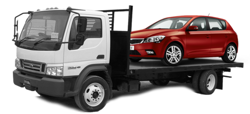
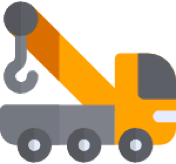
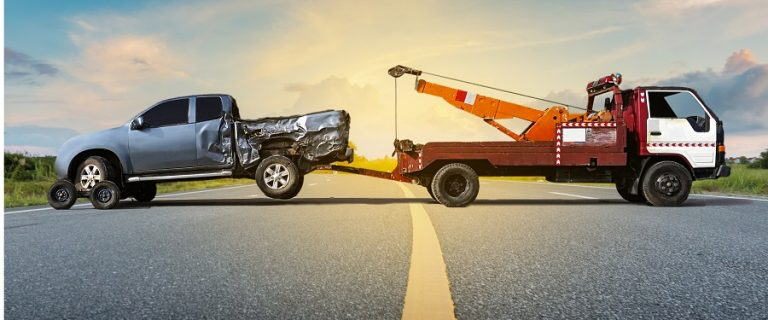
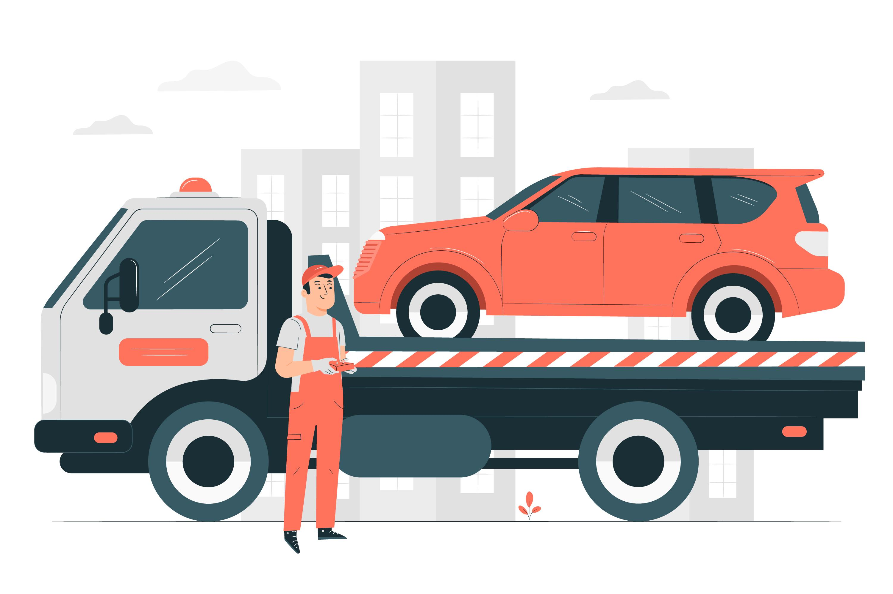

شركة أبو يوسف - لونش الإنقاذ السريع والنقل في جنوب سيناء
لو محتاج ونش إنقاذ سريع على الطريق أو محتاج ونش انقاذ في النفق او ونش إنقاذ في جنوب سيناء او ونش إنقاذ من سيناء وحتى طابا لو عطلان في سيناء ومحتاج ننقل للقاهرة، كمان لو إحتاجت شحن البطارية الفارغة او حتى توصيل البنزين

ونش الإنقاذ
تغيير الكاوتش
 شحن البطارية
شحن البطارية
توصيل الوقود
لماذا يجب أن تختارنا
- لدينا افضل أوناش انقاذ السيارات في جنوب سيناء - النفق - عيون موسى - رأس سدر - أبو زنيمة - أبو رديس - الطور - شرم الشيخ - سانت كاترين - دهب - نويبع
- نعمل علي مدار الساعة لمدة 24 ساعة و 7 أيام في الاسبوع 365 يوم في السنة
- لدينا سائقين محترفين في انقاذ ورفع السيارات مجهزين بأحدث معدات انقاذ السيارات
- لدينا خدمة عملاء تعمل علي مدار الساعة لتلقي طلبات إنقاذ السيارات
- لدينا احدث ونش انقاذ مزود بأحدث معدات إنقاذ السيارات لانقاذ ورفع السيارات
- نقدم اعلي جودة بأقل سعر لراحة ورضاء العميل
- سرعة وصول ونش الانقاذ الي مكان العطل ورفع السيارة بأحدث تقنيات ضمانا لعدم أيذاء اجزاء السيارة
- نقدم دعم واستشارات فنية لجميع العملاء
نصائح لإنقاذ السيارات عند التعطل
- عند تعطل سيارتك على الطريق عليك باتخاذ إجراءات السلامة باقصي سرعة.
- تحريك السيارة الى اقصى اليمين او في المكان الخاص بالطوارئ.
- تأمين السيارة وذلك عن طريق تشغيل أضواء الانتظار والعطل.
- إذا كان هناك ركاب بالسيارة عليك انزالها من الجانب غير المواجه للطريق السريع.
- محاولة إصلاح السيارة أو معرفة سبب العطل وطلب مساعدة من يستطيعون المساعدة من سائقي السيارات الاخرى ونش انقاذ سيارات.
- وضع الاقماع الخاصة بتعريف السائقين مكان السيارة المعطلة منعا لحدوث الحوادث أو الارتطام بها.
- طلب المساعدة عن طريق الاتصال بـ ونش انقاذ سيارات ليأتي بسرعة لنقل سيارتك.
- اذا كان العطل كبيرا ولا تستطيع السيطرة عليه مثل اشتعال السيارة فيمكنك الاتصال بالطوارئ.
- قبل الخروج بالسيارة عليك التأكد من الكهرباء والبنزين.
- أن يكون لديك رقم ونش انقاذ أبو يوسف لونش الانقاذ تتصل بنا في حالة حدوث عطل للسيارة على الطريق.
أعمالنا
نسعد بخدمتكم وتقديم أسرع خدمة لونش الانقاذ في سيناء
نقل السيارات المعطلة وسيارات الحوادث

ونش الانقاذ
تقديم خدمة أسرع ونش إنقاذ في سيناء بأفضل جودة وكفاءة وأرخص سعر وتشمل خدماتنا تشمل جميع مناطق جنوب سيناء
ونش إنقاذ النفق - عيون موسى - راس سدر
ونش إنقاذ ابو زنيمة - ابو رديس - الطور
ونش إنقاذ شرم الشيخ - دهب - نويبع
ونش انقاذ سانت كاترين
خدمة 24 ساعة
من نحن
_____________

شركة أبو يوسف لونش الإنقاذ وخدمات النقل متخصصون في إنقاذ ونقل السيارات
يسعدنا تقديم خدماتنا إليكم بسرعة وكفاءة وجودة مع أفضل أسعار
العنوان : جنوب سيناء - أبو زنيمة - الحي الاول
contact
سلامتكم تهمنا وخدمتكم هدفنا
يمكنكم التواصل معنا على الارقام التالية :
01020619732 01278095291 01095020604 01156430888
Find Us On Social Networks